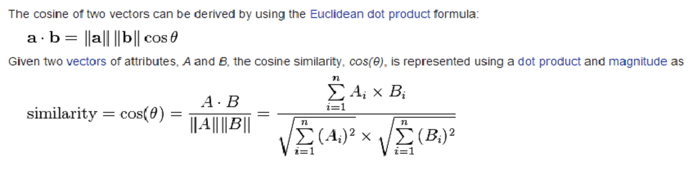
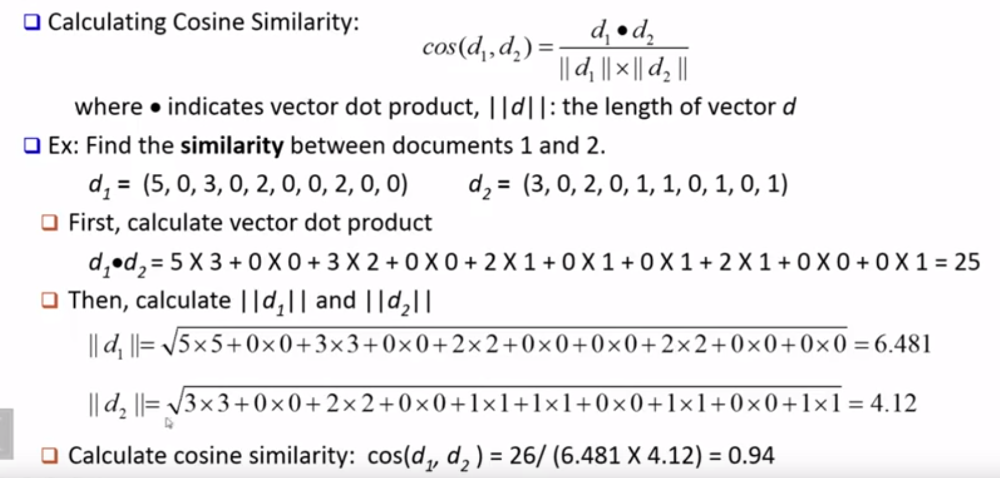

Cosine Similarity : Simple Example
Cosine similarity is widely used in data mining, recommendation systems, information retrieval .Here we will be discussing Cosine similarity as a proximity measure between two vectors. The cosine of 0° is 1, and it is less than 1 for any other angle. It is thus a judgment of orientation and not magnitude: two vectors with the same orientation have a cosine similarity of 1, two vectors at 90° have a similarity of 0, and two vectors diametrically opposed have a similarity of -1, independent of their magnitude. Cosine similarity is particularly used in positive space, where the outcome is neatly bounded in [0,1].
A simple example of Cosine Similarity can be explained using document comparison. In a later post we will discuss how to use the same technique to write a movie recommendation engine. Let us say we have multiple documents and we need to determine how similar those documents are. Let us say the documents are document1 and document2 respectively. A document can be represented by a bag of terms or a long vector, with each attribute recording the frequency of a particular term (such a word, keyword or phrase) in the document. So we will be having two term freq vectors (d1 and d2). d1 denotes term frequency in doc 1 and d2 in doc2. But both vectors have only terms common to each other.
Document team coach hockey baseball soccer penalty score win loss season -------- ---- ----- ------ -------- ------ ------- ----- --- ---- ------ document1 5 0 3 0 2 0 0 2 0 0 document2 3 0 2 0 1 1 0 1 0 1
So let us apply the same formula in the above vectors. 
So a cosine similarity of ~ 1 represents that the vectors are pointing in the same direction and very similar.
Python Implementation
import math
from collections import Counter
def create_vector(iterable1, iterable2):
counter1 = Counter(iterable1)
counter2 = Counter(iterable2)
all_items = set(counter1.keys()).union(set(counter2.keys()))
vector1 = [counter1[k] for k in all_items]
vector2 = [counter2[k] for k in all_items]
return vector1, vector2
def calculate_cosim(v1, v2):
dot_product = sum(n1 * n2 for n1, n2 in zip(v1, v2) )
magnitude1 = math.sqrt(sum(n ** 2 for n in v1))
magnitude2 = math.sqrt(sum(n ** 2 for n in v2))
return dot_product / (magnitude1 * magnitude2)
l1 = "I love doing marketing and sales. A good salesman should be always punctual".split()
l2 = " He is a very good programmer. Bad programmers have poor math foundation".split()
v1, v2 = build_vector(l1, l2)
print(calculate_cosim(v1, v2))
Output : 0.0800640769025
So the above output shows that documents are not similar. So now let us apply another example on the above program. This shows that two docs are close enough
l1 = "In football with penalty you can score a goal that can change the game. what a game. Players are dancing ".split()
l2 = "Its a penalty goal .In football a single score can change game. what a game. Players are dancing".split()
v1, v2 = build_vector(l1, l2)
print(calculate_cosim(v1, v2))
Output : 0.809